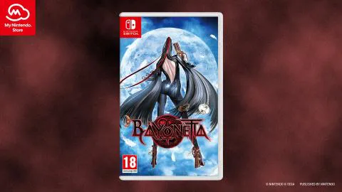

Nintendo España confirma que habrá más unidades del primer Bayonetta en formato físico en Switch, y pide disculpas a los fans por su fallido lanzamiento en la My Nintendo Store, donde salió sin previo aviso y se agotó en minutos.
Nintendo (y concretamente, Nintendo of Europe) lleva dos gestos seguidos que han enfurecido a los fans.
Tienen que ver con su tienda online, My Nintendo Store , a donde fueron relegadas dos lanzamientos muy esperados por los coleccionistas: Xenoblade Chronicles 3 (edición especial) y Bayonetta (formato físico del primer juego).
Con motivo del estreno de Bayonetta 3, Nintendo decidió editar una tirada limitada en formato físico del primer Bayonetta en Switch, que solo estaba disponible en formato digital.
Un lanzamiento sin relevancia comercial (el juego ya estaba disponible en digital), pero un guiño para los fans, que podrían guardar la trilogía completa en cartuchos de Switch.
Lamentablemente, en Europa estas versiones se retrasaron a finales de octubre, y fueron relegadas a la tienda oficial online My Nintendo Store: no llegarían a las tiendas, como también ocurrió con la edición especial de Xenoblade Chronicles 3.
Para más inri, las ediciones de Bayonetta salieron en My Nintendo Store sin previo aviso, sin posibilidad de reserva o lista de espera: tal cual lo anunciaron en Twitter, se agotaron en cinco minutos.
"Pedimos disculpas por no haber podido cubrir la demanda de la edición en formato físico del primer juego de Bayonetta" , dice Nintendo España en un comunicado, el mismo que han compartido las diferentes sedes de los países europeos (también en Reino Unido, donde el comunicado llegó tres días antes).
Confirman que repondrán unidades de la edición en formato físico de Bayonetta más adelante, antes de que acabe el año, pero solo en My Nintendo Store. No avisan cuando, pero puedes inscribirte para recibir notificaciones.
Nintendo pide disculpas por segunda vez en un mes, ya que cuando ocurrió una debacle similar (incluso peor) con la edición coleccionista de Xenoblade Chronicles 3 (tres meses después de que saliera el juego), pusieron un mensaje pop in en My Nintendo Store que rezaba: "Quisiéramos disculparnos por los problemas técnicos que dificultaron la compra anticipada de este producto"... aunque confirmando que estaba agotada.